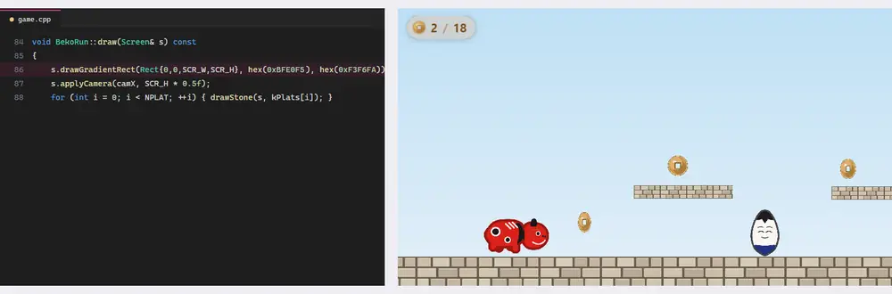
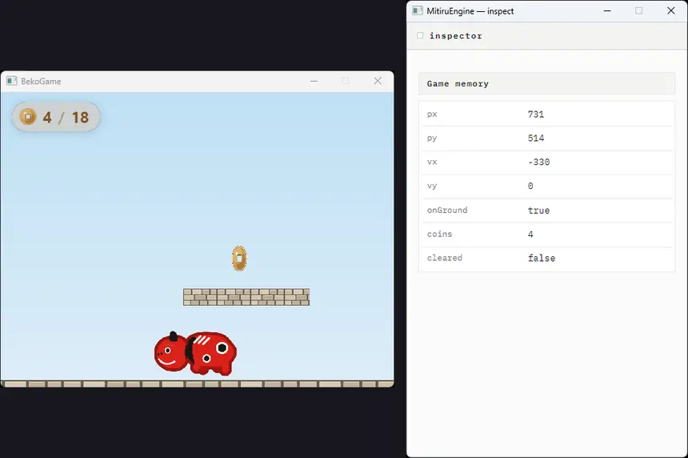
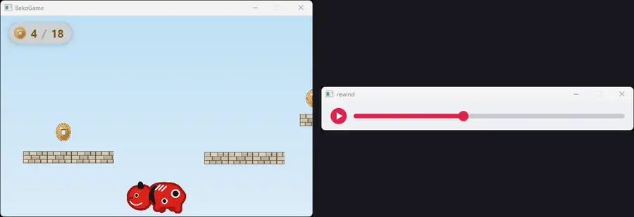

MitiruEngine
MitiruEngineTUTORIAL
はじめてのゲーム
C++ だけで、小さな横スクロールアクションを作ります。赤べこを矢印キーで歩かせ、Space で跳び、石畳の足場を渡り、起き上がり小法師を上から踏み、古銭を拾って、ゴールの幟を目指す — それだけのゲームです。実際に組み立てる順に進めます。まず歩いて跳ぶところから作り、ステージ・絵・カメラを足してゲームにし、そのあとで、走らせたまま数字を直すホットリロード・状態を覗く窓・過去へ戻る巻き戻し・HTML/CSS の HUD へと進みます。エンジンの機能は、それが要る場面で順に出てきます。
作るもの
完成形がこれです。赤べこ・小法師・幟・石畳・古銭はすべて画像（スプライト）、空は draw で描くグラデーションです。矢印キーで歩き、Space で跳びます。小法師は上から踏むと倒せて、横から当たると少し戻されます。古銭を拾うと左上のカウンタが増え、右端の幟に触れるとクリアです。左上のカウンタと「クリア！」は、あとで HTML/CSS の HUD に置き換えます。

drawGradientRect、左上のカウンタは HTML/CSS の HUD です。examples/beko_run/ にそのまま入っています。ビルドして mitiru_host beko_run/beko_run.dll で遊べます。インストールがまだなら インストールを先にどうぞ。全文は最後に置いてあります。ゲームの動き方
どんなゲームも、エンジンは毎フレーム同じことをくり返します。入力を読み、update で状態を進め、draw で状態を描く。これを 1 秒に約 60 回くり返します（その回数が FPS）。
update で状態を進め、draw で描きます。dt は 1 フレームの長さ（秒）で、update(Input in, float dt) の形で渡ってきます。ゲームの「状態」は 1 つの struct にまとめます。赤べこのこのゲームなら、赤べこの位置・速度・向き、敵、カメラ、古銭の数などです。数値と配列だけで持ち、ポインタや std::vector は持ちません（この形が、あとで出てくる巻き戻しや観察窓を支えます。理由は仕組みで説明します）。
赤べこを歩かせる・跳ばせる
まず横移動です。動きの肝は in.move() で、移動入力を 1 つにまとめて返します（.x と .y が各 −1〜1）。矢印キー・WASD・パッドの左スティックが、すべてこの 1 つに合流します。だから速度を掛けて足すだけで、どの入力でも左右移動になります。
const float mx = in.move().x; vx = mx * SPEED; // 横の速さ（SPEED は 330） if (mx < -0.1f) { faceLeft = true; } // 進む向きを覚える（絵の反転に使う） else if (mx > 0.1f) { faceLeft = false; } px += vx * dt; // dt を掛けて位置を進める
次に跳躍です。地面にいるとき Space を押した瞬間だけ、上向きの速度を与えます。あとは毎フレーム重力で下向きに加速し、位置を進めます。座標は左上が原点で、y は下に増えるので、上向きは「マイナス」です。
if (onGround && in.pressed(Key::Space)) { vy = -JUMP; } // 押した瞬間だけ跳ぶ（JUMP は 780） vy += GRAV * dt; // 重力で下へ加速（GRAV は 2000） py += vy * dt;
足場との当たりは、四角どうしの重なりで調べます。小さな道具 box(...)（2 つの矩形が重なれば true）を用意しておき、赤べこと各足場が重なったら、めり込んだぶんだけ押し戻します。縦（着地）を先に、横（側面）をあとに解くのがコツです。逆にすると、薄い足場に上から降りるとき、着地する前に「側面に当たった」と誤解して横へ弾かれ、乗れません。
// 縦：重力で落ちたあと、足場の上に乗る（vy>0＝落下中）か、頭をぶつける py += vy * dt; onGround = false; for (const Plat& p : kPlats) if (hitBox(p.x, p.y, p.w, p.h)) { if (vy > 0.0f) { py = p.y - PH*0.5f; vy = 0.0f; onGround = true; } // 着地 } // 横：進んだあと、ブロックの側面で止める（縦を先に解いたので誤爆しない） px += vx * dt; for (const Plat& p : kPlats) if (hitBox(p.x, p.y, p.w, p.h)) { /* 左右どちらから当たったかで押し戻す */ }
 サンプル「input（入力）」キー・マウス・パッドの読み方だけを扱う最小の例を、動くコードと実行画面で。
→
サンプル「input（入力）」キー・マウス・パッドの読み方だけを扱う最小の例を、動くコードと実行画面で。
→
ステージをデータにする
足場・敵・古銭の「置き場所」は、動きのコードとは分けて、数値の表にします。ロジック（どう動くか）とデータ（どこに何を置くか）を分けておくと、ステージを直すときにロジックを触らずに済みます。このゲームでは level.hpp にまとめました。
// 足場。先頭は地面、あとは飛び乗れる薄い踏み台（{x, y, 幅, 高さ}） struct Plat { float x, y, w, h; }; constexpr Plat kPlats[] = { {0.0f, GROUND_Y, WORLD_W, 200.0f}, // 地面 {620.0f, 430.0f, 180.0f, 24.0f}, // 導入の台 {980.0f, 432.0f, 160.0f, 24.0f}, // 階段① {1170.0f, 356.0f, 160.0f, 24.0f}, // 階段② {1360.0f, 288.0f, 160.0f, 24.0f}, // 階段③（頂上） // …降りる段・広い台・ゴール前の台… };
敵（起き上がり小法師）や古銭も同じく座標の表です。ステージを変えたければ、この数値を書き換えるだけ。update 側は表を順番に見て動かすだけなので、置き場所とルールがきれいに分かれます。この「置き換えて確かめる」作業は、あとで出てくるホットリロードがいちばん活きるところです。
絵を出す
画像を描くのは s.drawSprite(画像, 置く矩形, 元の矩形) です。画像はゲームの隣の assets/sprites/ に置いた PNG で、起動時に一度だけ読み込みます。赤べこは 4 枚の歩行コマを切り替え、進む向きに合わせて左右反転します。
// 歩行コマ（地面を動く時だけ 0→1→2→3 と送る） if (onGround && std::fabs(vx) > 10.0f) if (walk.every(0.12f, dt)) { step = (step + 1) % 4; } // Timer で 0.12 秒ごと // 描く。最後の faceLeft で左右反転、withAlpha で被弾中の点滅 const render::Texture& tex = kBeko[step]; s.drawSprite(tex, dstRect, whole(tex), color::White.withAlpha(a), faceLeft);
画像そのものはエンジン側がまとめて持ちます。ゲームの状態 struct には画像を入れず、読み込んだ画像はファイルの外に一度だけ置いておきます。こうしておくと状態が「数値だけ」の素直なデータに保て、あとの巻き戻しや観察窓がそのまま効きます。
横スクロールにする
世界は画面よりずっと広い（このゲームは横 3600）ので、カメラで赤べこを追います。applyCamera(注視点x, 注視点y) を呼ぶと、以降の描画がその点を画面中央に置いた座標系になります。描き終えたら endCamera() で元に戻します。空や HUD はカメラの外（画面固定）で描きます。
s.drawGradientRect(...); // 空（画面固定） s.applyCamera(camX, SCR_H * 0.5f); // 注視点 camX を画面中央に = 横スクロール // …足場・古銭・敵・赤べこを世界座標で描く… s.endCamera(); // カメラを戻す
camX は赤べこの位置に合わせて動かし、世界の端では止めます。これで赤べこが画面の真ん中あたりに居続け、背景がスクロールします。
 サンプル「camera（追従カメラ）」画面より広い世界を、先読みしながらなめらかに追う例を、動くコードと実行画面で。
→
サンプル「camera（追従カメラ）」画面より広い世界を、先読みしながらなめらかに追う例を、動くコードと実行画面で。
→
ファイルを分ける
ここまでで「データ」「絵」「動き」が出そろいました。小さなゲームでも、役割ごとにファイルを分けておくと読みやすく、育てやすくなります。このゲームはこう分けています。
level.hpp（データ）と sprites.hpp（絵）を game.hpp / game.cpp（状態と本体）が使い、beko_run_dll.cpp（入口）が MITIRU_GAME でひとつにまとめます。データ→絵→本体→入口、と読み進められます。入口のファイルはこれだけです。MITIRU_GAME の 1 行で、この struct を「ゲーム本体」としてエンジンに登録します。
beko_run_dll.cpp
#include "game.hpp" MITIRU_GAME(BekoRun); // この struct をゲームの入口にする
ここまでで、遊べる横スクロールアクションが動いています。ここから先は、このゲームを題材に、エンジンの機能を順に見ていきます。
数字を調整する — ホットリロード
ゲームができると、今度は手触りが気になります。跳びが低い、重力が重い、空の色が違う。こうした「何度も値を変えて確かめる」作業のために、ホットリロードがあります。mitiru watch（または --watch）で走らせておくと、ソースを保存した瞬間に、ゲームを止めずに新しいコードへ差し替わります。
下は、走らせたまま（左）エディタで空の色の定数を書き換えて保存すると、（右）ゲームの空がその場で変わる様子です。ゲームは止まらず、古銭のカウントも赤べこの位置もそのままに、空の色だけが切り替わります。再起動していないので、拾った古銭は数え続けています。

draw の空の色の定数を書き換えて保存すると、走っているゲームの空がその場で変わります。再起動していないので、古銭のカウントも位置もそのままです。数値・色・ロジックはこうして止めずに詰められます。書き間違えてビルドが壊れても大丈夫です。エラーが画面に出て、ゲームは前のコードのまま動き続けます。直して保存すれば元に戻るので、コンソールと往復する必要はありません。HTML と CSS の見た目も同じように、保存した瞬間に反映されます（そちらは再ビルドすら要りません）。
状態を覗く — 観察窓
画面を見ても分からないことがあります。当たり判定が思ったように働かない、ある値が少しずつずれていく。数字が画面に出ていないと、原因が見えません。そんなときは、状態をそのまま映す窓を開きます。窓に出したいフィールドを MITIRU_REFLECT の 1 行で申告するだけです。
// 観察窓に映す状態のフィールドを申告する MITIRU_REFLECT(BekoRun, px, py, vx, vy, onGround, coins, cleared);
あとは --inspect を付けて起動すると、ゲームの隣に観察窓が開き、申告したフィールドがライブで並びます。

MITIRU_REFLECT で申告したフィールドが、ゲームの隣でそのまま動きます。赤べこが跳ぶと vy がマイナスに振れ、着地で onGround が true に戻る — 目に見えない数字が見えます。この窓自体も HTML / CSS で出来ています。観察窓のほかにも、入力の生の値・過去への巻き戻し・fps・音量メーターなどの窓があり、どれも見たいものに合わせて選べます。大きなエディタを開く代わりに、1 つの窓は 1 つの関心事だけを映す、という作りです。
 サンプル「observe（観察）」赤べこの内部の値を観察窓で覗く例を、動くコードと実行画面でもっと詳しく。
→
サンプル「observe（観察）」赤べこの内部の値を観察窓で覗く例を、動くコードと実行画面でもっと詳しく。
→
時間を巻き戻す
観察窓で「今」が見えるなら、次は「過去」です。MITIRU_REWIND_BUFFER を 1 行足すと、エンジンが毎フレームの状態を記録します。
// 巻き戻し用に、毎フレームの状態を 600 フレーム分（約 10 秒）記録する MITIRU_REWIND_BUFFER(600);
--inspect rewind で起動すると、ゲームの下にシークバーが出ます。バーを過去へ動かすと、ゲームがその瞬間の状態へまるごと戻ります。赤べこの位置も、足場も、その時のまま再現されます。

観察も巻き戻しも、申告の 1 行を足すだけで効きます。これができるのは、状態を 1 個にまとめてエンジンが預かっているからです。その仕組みを次で説明します。
 サンプル「rewind（巻き戻し）」積んだブロックを過去へ戻す例を、動くコードと実行画面でもっと詳しく。
→
サンプル「rewind（巻き戻し）」積んだブロックを過去へ戻す例を、動くコードと実行画面でもっと詳しく。
→
巻き戻し・観察・ホットリロードを支える仕組み
ホットリロードで状態が消えないのも、窓に状態がそのまま映るのも、過去へ戻れるのも、出どころは 1 つです。ゲームの状態を 1 個の struct にまとめて、それをエンジンが預かっているからです。
エンジンはこの struct をまるごとコピーして、保存したり復元したりします。だから、預かった状態を新しいコードへそのまま渡せますし（ホットリロード）、毎フレームの状態を記録して過去へ戻せます（巻き戻し）。これが成り立つには、状態が「まるごとコピーできる素直なデータ」であってほしいのです。具体的には、ポインタや std::vector を持たない型のこと。BekoRun を数値と配列だけに保ち、画像をファイルの外に置いているのは、このためです。
struct にまとめておくと、それは「まるごとコピーできる素直なデータ」になります。エンジンはこれをコピーして渡したり戻したりするだけ。だからホットリロード・巻き戻し・観察が、同じ 1 つの仕組みから出てきます。struct のフィールド（状態の形）を足したり並べ替えたりしたときだけ、再起動が安全です（形が変わると、預かっていたデータが合わなくなるため）。見た目を HTML / CSS にする
このゲームの左上の古銭カウンタと「クリア！」は、C++ ではなく HTML と CSS で描いています。ゲームのルール（C++）はそのままに、見た目だけを Web の書き方で作れます。エンジンは起動時に assets/scene.html を読み込み、ゲーム画面の上に透明なオーバーレイとして重ねます。
つなぎは 2 つ。C++ は hud.set("名前", 値) で値を送り、HTML は data-m-text="名前" で受けます。名前を一致させるだけで、あいだの JavaScript は 1 行も要りません。
game.cpp（C++ 側）
void BekoRun::pushHud(Hud hud) const { hud.set("view.coins", coins); // scene.html の同じ名前へ届く hud.set("view.total", NCOIN); hud.set("view.cleared", cleared ? 1 : 0); }
assets/scene.html（HTML/CSS 側）
<!-- data-m-text="名前" = その名前で C++ が送った値をここに表示 --> <div class="coins"> <img src="sprites/coin.png"> <span data-m-text="view.coins">0</span> / <span data-m-text="view.total">0</span> </div> <!-- data-m-class="show: 条件" = 条件が真のときだけ class を付ける（クリア表示） --> <div class="clear" data-m-class="show: view.cleared > 0"><span>クリア！</span></div>
あとは CSS を盛れば、影・角丸・アニメ付きの HUD になります。gameplay の左上の丸いカウンタも、クリア時のふわっと出る文字も、この CSS です。HTML と CSS もホットリロードできるので、余白や色を走らせたまま詰められます。詳しくは 画面 (HTML / CSS) にあります。
 サンプル「html_hud」C++ の 1 つの値を HTML の 6 つの表示へ同時に映す例を、動くコードと実行画面でもっと詳しく。
→
サンプル「html_hud」C++ の 1 つの値を HTML の 6 つの表示へ同時に映す例を、動くコードと実行画面でもっと詳しく。
→
全コード
このゲームの全文です。役割ごとに 5 つのファイルに分かれています。examples/beko_run/ にそのまま入っているので、ビルドして mitiru_host beko_run/beko_run.dll で遊べます。長いので折りたたんであります。
level.hpp — ステージの寸法と配置（数値だけのデータ）（55 行）
// level.hpp — ステージの寸法と配置（ぜんぶ数値だけのデータ）。 #pragma once // 画面と物理の定数 constexpr float SCR_W = 1280.0f, SCR_H = 720.0f; constexpr float WORLD_W = 3600.0f; // 画面より広い世界 constexpr float GROUND_Y = 560.0f; // 地面の上端 constexpr float GRAV = 2000.0f, SPEED = 330.0f, JUMP = 780.0f; constexpr float PW = 58.0f, PH = 92.0f; // 赤べこの当たり箱 constexpr float GOAL_X = 3440.0f; // ゴール（幟）の位置 constexpr float COIN_DISP = 40.0f; // 古銭の表示サイズ // 足場。先頭は地面（切れ目なし）、あとは飛び乗れる薄い踏み台。 // 前半は導入の低い台 → 中盤で 3 段の階段を登り、1 段で降りる → 後半は広い台と平地。 struct Plat { float x, y, w, h; }; constexpr Plat kPlats[] = { {0.0f, GROUND_Y, WORLD_W, 200.0f}, // 地面 {620.0f, 430.0f, 180.0f, 24.0f}, // 導入の台 {980.0f, 432.0f, 160.0f, 24.0f}, // 階段① {1170.0f, 356.0f, 160.0f, 24.0f}, // 階段② {1360.0f, 288.0f, 160.0f, 24.0f}, // 階段③（頂上） {1600.0f, 384.0f, 170.0f, 24.0f}, // 降りる段 {2180.0f, 428.0f, 260.0f, 24.0f}, // 広い台（上に敵） {2980.0f, 424.0f, 200.0f, 24.0f}, // ゴール前の台 }; constexpr int NPLAT = static_cast<int>(sizeof(kPlats) / sizeof(kPlats[0])); // 敵（起き上がり小法師）の初期位置。地上に散らしつつ、1 体は広い台の上。 struct FoeInit { float x, y; }; constexpr FoeInit kFoes[] = { {900.0f, GROUND_Y}, // 階段の手前 {1780.0f, GROUND_Y}, // 降りた先 {2300.0f, 428.0f}, // 広い台の上 {2620.0f, GROUND_Y}, {2740.0f, GROUND_Y}, // 近い 2 体（少し難しい所） {3200.0f, GROUND_Y}, // ゴール前 }; constexpr int NFOE = static_cast<int>(sizeof(kFoes) / sizeof(kFoes[0])); constexpr float FOE_SPEED = 46.0f; // 小法師の左右の速さ constexpr float FOE_RANGE = 64.0f; // 初期位置から左右に往復する幅 // 古銭の位置（中心座標）。階段を登る所ほど高く並べ、平地は拾いやすい高さに置く。 struct V2 { float x, y; }; constexpr V2 kCoins[] = { {300, 500}, {370, 458}, {450, 458}, {530, 500}, // 導入の山なり {700, 392}, // 導入の台 {1010, 395}, {1200, 320}, {1390, 252}, // 階段を登る {1500, 468}, // 降り際の小ジャンプ {1670, 346}, // 降りる段の上 {2000, 500}, // 平地の一息 {2260, 392}, {2380, 392}, // 広い台の上 {2680, 458}, // 2 体の上を跳ぶ {3040, 388}, {3100, 388}, // ゴール前の台 {3300, 500}, {3380, 500}, // ゴール前の地上 }; constexpr int NCOIN = static_cast<int>(sizeof(kCoins) / sizeof(kCoins[0]));
sprites.hpp — 画像の読み込みと石畳の描画（42 行）
// sprites.hpp — 画像の読み込みと石畳の描画。 // 画像は可変長データなので状態 struct には入れず、ここで一度だけ読む。 #pragma once #include <algorithm> #include <mitiru.hpp> #include <mitiru/render/Texture.hpp> #include "level.hpp" using namespace mitiru; // 読み込み。失敗時は value_or で空画像。 inline render::Texture loadTex(const char* p) { return render::Texture::fromFile(p).value_or(render::Texture{}); } inline const render::Texture kBeko[4] = { loadTex("beko_run/assets/sprites/akabeko_0.png"), loadTex("beko_run/assets/sprites/akabeko_1.png"), loadTex("beko_run/assets/sprites/akabeko_2.png"), loadTex("beko_run/assets/sprites/akabeko_3.png"), }; inline const render::Texture kKoboshi = loadTex("beko_run/assets/sprites/koboshi.png"); // 敵 inline const render::Texture kGoal = loadTex("beko_run/assets/sprites/goal_nobori.png"); // ゴールの幟 inline const render::Texture kStone = loadTex("beko_run/assets/sprites/stone.png"); // 石畳タイル inline const render::Texture kCoin = loadTex("beko_run/assets/sprites/coin.png"); // 古銭 // 画像まるごとを指す src 矩形。 inline Rect whole(const render::Texture& t) { return Rect{0.0f, 0.0f, static_cast<float>(t.width()), static_cast<float>(t.height())}; } // 石畳ブロックを 1 枚描く。横にタイルを敷き、地面の厚みは暗い石で埋める。 inline void drawStone(Screen& s, const Plat& p) { const float srcW = static_cast<float>(kStone.width()), srcH = static_cast<float>(kStone.height()); const float bandH = std::min(p.h, 56.0f); const float tileW = srcW * (bandH / srcH); // 縦横比を保ったタイル幅 for (float x = p.x; x < p.x + p.w - 0.5f; x += tileW) { const float w = std::min(tileW, p.x + p.w - x); s.drawSprite(kStone, Rect{x, p.y, w, bandH}, Rect{0.0f, 0.0f, srcW * (w / tileW), srcH}); } if (p.h > bandH) { s.drawRect(Rect{p.x, p.y + bandH, p.w, p.h - bandH}, hex(0x6E635A)); } }
game.hpp — ゲームの状態（GameMemory）と入口の宣言（37 行）
// game.hpp — ゲームの状態（GameMemory）と入口の宣言。 // 状態はぜんぶ数値だけの struct 1 つ。中身の処理は game.cpp に書く。 #pragma once #include <mitiru.hpp> #include "level.hpp" using namespace mitiru; // 敵 1 体の状態。vx は左右の速さ（＋で右、−で左）。 struct Foe { float x, y, t, vx; bool alive; }; struct BekoRun { bool init = false; float px = 120.0f, py = GROUND_Y - PH * 0.5f; // 赤べこの中心 float vx = 0.0f, vy = 0.0f; bool onGround = false, faceLeft = false; Timer walk; int step = 0; Foe foes[NFOE] = {}; float camX = SCR_W * 0.5f; bool cleared = false; float clearT = 0.0f; float hurt = 0.0f; float t = 0.0f; bool coinGot[NCOIN] = {}; int coins = 0; void update(Input in, Hud hud, float dt); // 毎フレームの動き（game.cpp） void draw(Screen& s) const; // 毎フレームの描画（game.cpp） void pushHud(Hud hud) const; // 状態を HTML/CSS の HUD へ送る（game.cpp） // 小さな道具（当たり判定と範囲制限） static float clampf(float v, float a, float b) { return v < a ? a : (v > b ? b : v); } static bool box(float ax, float ay, float aw, float ah, float bx, float by, float bw, float bh) { return ax < bx + bw && ax + aw > bx && ay < by + bh && ay + ah > by; } bool hitBox(float bx, float by, float bw, float bh) const { // 赤べこと矩形の重なり return box(px - PW * 0.5f, py - PH * 0.5f, PW, PH, bx, by, bw, bh); } };
game.cpp — ゲーム本体（update・draw の中身）（119 行）
// game.cpp — ゲーム本体。毎フレーム update で動かし、draw で描く。 #include "game.hpp" #include "sprites.hpp" #include <cmath> // 状態を HTML/CSS の HUD（assets/scene.html）へ送る。data-m-text / data-m-class が受け取る。 void BekoRun::pushHud(Hud hud) const { hud.set("view.coins", coins); hud.set("view.total", NCOIN); hud.set("view.cleared", cleared ? 1 : 0); } void BekoRun::update(Input in, Hud hud, float dt) { if (!init) { // 敵をデータから配置（最初は左へ歩き出す） init = true; for (int i = 0; i < NFOE; ++i) { foes[i] = {kFoes[i].x, kFoes[i].y, static_cast<float>(i) * 0.7f, -FOE_SPEED, true}; } } t += dt; if (cleared) { clearT += dt; pushHud(hud); return; } if (hurt > 0.0f) { hurt -= dt; } // 縦：ジャンプ → 重力 → 足場に着地。縦を先に解くと薄い段にもきちんと乗れる。 if (onGround && in.pressed(Key::Space)) { vy = -JUMP; } vy += GRAV * dt; py += vy * dt; onGround = false; for (int i = 0; i < NPLAT; ++i) { // 上から乗る／下から頭ぶつけ const Plat& p = kPlats[i]; if (hitBox(p.x, p.y, p.w, p.h)) { if (vy > 0.0f) { py = p.y - PH * 0.5f; vy = 0.0f; onGround = true; } else if (vy < 0.0f) { py = p.y + p.h + PH * 0.5f; vy = 0.0f; } } } // 横：移動（矢印/WASD/パッドを 1 本にまとめた move().x）とブロックの側面 const float mx = in.move().x; vx = mx * SPEED; if (mx < -0.1f) { faceLeft = true; } else if (mx > 0.1f) { faceLeft = false; } px += vx * dt; for (int i = 0; i < NPLAT; ++i) { // ブロックの側面で止める const Plat& p = kPlats[i]; if (hitBox(p.x, p.y, p.w, p.h)) { if (vx > 0.0f) { px = p.x - PW * 0.5f; } else if (vx < 0.0f) { px = p.x + p.w + PW * 0.5f; } } } px = clampf(px, PW * 0.5f, WORLD_W - PW * 0.5f); // 歩行アニメ（地面を動く時だけコマ送り、空中は 1 枚） if (onGround && std::fabs(vx) > 10.0f) { if (walk.every(0.12f, dt)) { step = (step + 1) % 4; } } else if (!onGround) { step = 2; } else { step = 0; } // 敵。上から踏めば倒す、横から当たると戻される。 const float kh = static_cast<float>(kKoboshi.height()) * 0.36f; const float kw = static_cast<float>(kKoboshi.width()) * 0.36f; for (int i = 0; i < NFOE; ++i) { Foe& f = foes[i]; if (!f.alive) { continue; } f.t += dt; // 左右に往復。初期位置から FOE_RANGE を超えたら折り返す。 f.x += f.vx * dt; if (f.x < kFoes[i].x - FOE_RANGE) { f.x = kFoes[i].x - FOE_RANGE; f.vx = -f.vx; } else if (f.x > kFoes[i].x + FOE_RANGE) { f.x = kFoes[i].x + FOE_RANGE; f.vx = -f.vx; } const float fx = f.x - kw * 0.32f, fy = f.y - kh * 0.72f, fw = kw * 0.64f, fh = kh * 0.72f; if (hitBox(fx, fy, fw, fh)) { if (vy > 0.0f && (py + PH * 0.5f) < f.y - kh * 0.35f) { f.alive = false; vy = -JUMP * 0.6f; } else if (hurt <= 0.0f) { hurt = 0.8f; px += faceLeft ? 96.0f : -96.0f; vy = -260.0f; } } } // 古銭を集める for (int i = 0; i < NCOIN; ++i) { if (coinGot[i]) { continue; } if (hitBox(kCoins[i].x - COIN_DISP * 0.5f, kCoins[i].y - COIN_DISP * 0.5f, COIN_DISP, COIN_DISP)) { coinGot[i] = true; ++coins; } } if (px > GOAL_X) { cleared = true; } // ゴール判定 camX = clampf(px, SCR_W * 0.5f, WORLD_W - SCR_W * 0.5f); // カメラ横追従 pushHud(hud); // 古銭カウンタ等を HUD へ } void BekoRun::draw(Screen& s) const { s.drawGradientRect(Rect{0.0f, 0.0f, SCR_W, SCR_H}, hex(0xBFE0F5), hex(0xF3F6FA)); // 空 s.applyCamera(camX, SCR_H * 0.5f); // camX を画面中央に = 横スクロール // ゴールの幟。石畳より先に描くと、地面が竿の根元を覆って刺さって見える。 const float gw = static_cast<float>(kGoal.width()) * 0.9f, gh = static_cast<float>(kGoal.height()) * 0.9f; s.drawSprite(kGoal, Rect{GOAL_X - gw * 0.35f, GROUND_Y + 8.0f - gh, gw, gh}, whole(kGoal)); for (int i = 0; i < NPLAT; ++i) { drawStone(s, kPlats[i]); } // 石畳 // 古銭（上下に揺れ、横幅を伸縮させて回転風に） for (int i = 0; i < NCOIN; ++i) { if (coinGot[i]) { continue; } const float bob = std::sin(t * 3.0f + static_cast<float>(i)) * 5.0f; const float cw = COIN_DISP * (0.35f + 0.65f * std::fabs(std::cos(t * 2.4f + static_cast<float>(i)))); s.drawSprite(kCoin, Rect{kCoins[i].x - cw * 0.5f, kCoins[i].y - COIN_DISP * 0.5f + bob, cw, COIN_DISP}, whole(kCoin)); } // 敵（ゆらゆら弾む） const float kw = static_cast<float>(kKoboshi.width()) * 0.36f, kh = static_cast<float>(kKoboshi.height()) * 0.36f; for (int i = 0; i < NFOE; ++i) { const Foe& f = foes[i]; if (!f.alive) { continue; } const float bob = std::sin(f.t * 3.0f) * 4.0f; s.drawSprite(kKoboshi, Rect{f.x - kw * 0.5f, f.y - kh + bob, kw, kh}, whole(kKoboshi)); } // 赤べこ（進む向きに反転、被弾中は点滅） const render::Texture& tex = kBeko[step]; const float bw = static_cast<float>(tex.width()) * 0.44f, bh = static_cast<float>(tex.height()) * 0.44f; const float a = (hurt > 0.0f && (static_cast<int>(hurt * 20.0f) % 2 == 0)) ? 0.45f : 1.0f; s.drawSprite(tex, Rect{px - bw * 0.5f, py - bh * 0.5f, bw, bh}, whole(tex), color::White.withAlpha(a), faceLeft); s.endCamera(); // 古銭カウンタと「クリア！」は HTML/CSS の HUD（assets/scene.html）が描く。 }
beko_run_dll.cpp — DLL の入口 + 観察窓/巻き戻しの申告（16 行）
// beko_run — 赤べこの横スクロールアクション（会津のみち）。 // level.hpp … ステージのデータ（寸法・足場・敵・古銭） // sprites.hpp… 画像の読み込みと石畳の描画 // game.hpp … ゲームの状態（GameMemory）と入口の宣言 // game.cpp … ゲーム本体（update・draw の中身） // このファイルは DLL の入口を作るだけ。 // 実行: mitiru_host.exe beko_run/beko_run.dll #include "game.hpp" // inspector（別窓）に映す状態のフィールドを申告する。 MITIRU_REFLECT(BekoRun, px, py, vx, vy, onGround, coins, cleared); // 巻き戻し（time-travel）用に、毎フレームの状態を 600 フレーム分（約 10 秒）記録する。 MITIRU_REWIND_BUFFER(600); MITIRU_GAME(BekoRun);
よく使う関数（in / hud / s）
ゲームを書くとき、触るのは主に 3 つです。update(Input in, Hud hud, float dt) の in と hud、そして draw(Screen& s) の s。よく使うものを並べておきます。一度に覚える必要はなく、要るときに見てください。
in — 入力を読む（Input）
| in.move() | 移動入力を 1 つに合成（矢印 / WASD / 左スティック）。.x .y 各 −1〜1 |
| in.pressed(Key::Space) | 押した瞬間だけ true（ジャンプなど）。in.released(...) は離した瞬間 |
| in.down(Key::Right) | キーが押されている間ずっと true |
| in.confirmPressed() | 「決定」を押した瞬間（Space / Z / Enter / パッド A） |
| in.mouseDown(0) / mouseX() / mouseY() | マウスのボタンと座標 |
| in.padDown(Pad::A) / leftStick() | ゲームパッド（つながっていれば自動で使えます） |
hud — 送る・鳴らす・窓（Hud）
| hud.set("view.coins", coins) | HTML の表示へ値を送る（data-m-text が受ける） |
| hud.play("hit") | 効果音を鳴らす（hud.play("hit", 0.6f) で音量指定） |
| hud.open(Tool::Inspector) | 観察窓などを開く（何度呼んでも 1 回だけ開く） |
| hud.screenshot() | その瞬間の画面を画像保存 |
| hud.quit() | ゲームを終了する |
s — 画面に描く（Screen）
| s.drawSprite(tex, dst, src) | 画像を描く。dst に置き、src は画像のどこを使うか。末尾に tint, flipH も |
| s.drawRect({x, y, w, h}, color) | 四角を描く（色は Color{r,g,b,a} か color::Red） |
| s.drawGradientRect(rect, top, bottom) | 上→下のグラデーション矩形（空・背景に） |
| s.applyCamera(x, y) / endCamera() | 注視点 (x, y) を画面中央に置く座標へ切り替え／戻す（スクロール） |
| s.drawTextInRect(rect, "文字", color, size, …) | 矩形に収めて文字を描く |